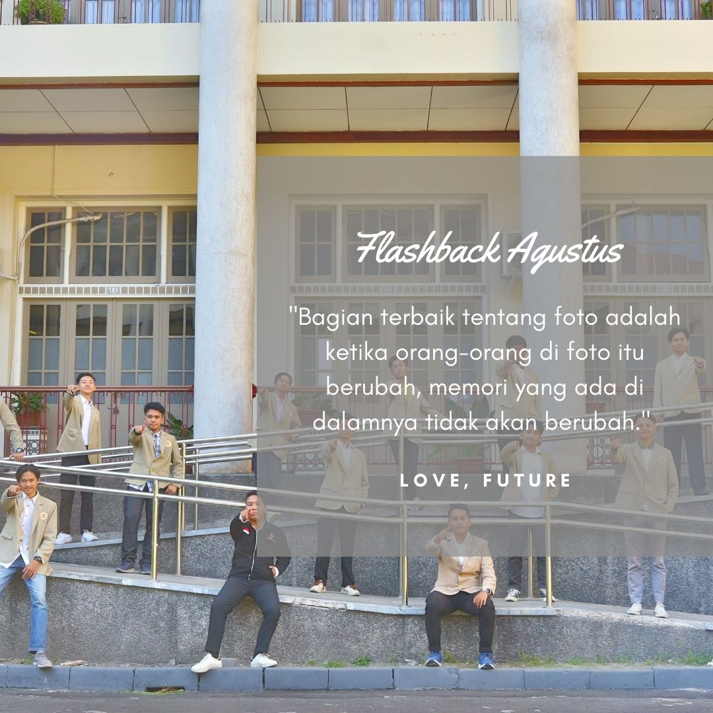

Mengubah Sampah menjadi Tuah
Di Yogyakarta, 53,51% dari total sampah adalah sisa makanan. Setiap hari, sekitar 96 ton terbuang sia-sia dan menimbulkan gas metana yang mempercepat pemanasan global.
Menurut BPS, lebih dari 86% warga Yogyakarta di atas usia 5 tahun sudah menggunakan internet. Ini bukan sekadar angka—ini adalah peluang.
